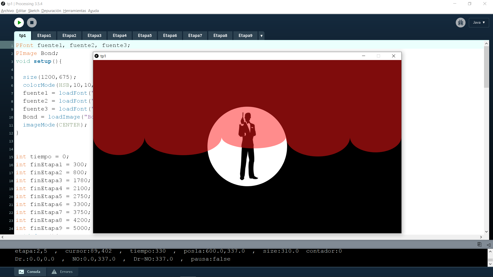
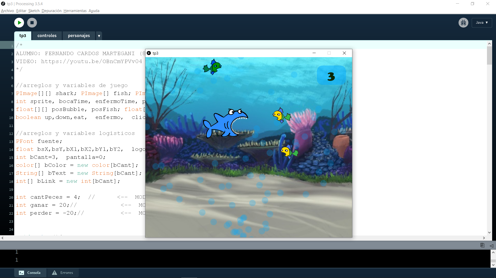
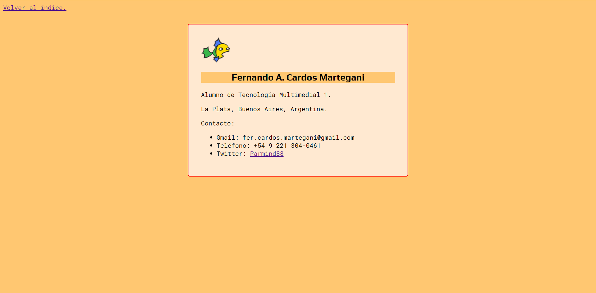

Trabajos de Tecno 1
Trabajos realizados por Fernando Cardos Martegani para la comisión 2 de Tecnología Multimedial 1, hasta el día 17/09/2022.
Desafíos:
Propuestas del docente que no fueron evaluadas pero sirvieron para ejercitar los conceptos vistos en clase y en los videos.

Construir una diana para familiarizarse con las primitivas y el campo de coordenadas.

Generar una animación simple con el nombre del alumno, para incorporar variables que cambien durante la ejecución del programa.

Generar un juego de TaTeTi funcional, para familiarizarse con los arreglos de una y/o dos dimensiones.
Trabajos prácticos:
Instancias de evaluación.

Construir un dibujo estático, usando figuras primitivas. En este caso fue un muñeco de nieve, por sugerencia del profesor.

Recrear una secuencia de créditos animada, usando figuras primitivas, imágenes, variables que cambien durante la ejecución y eventos de mouse y/o teclado. En este caso se usó la secuencia de Dr. No, la primera película de James Bond.

Generar una ilusión óptica interactiva, usando estructuras repetitivas y funciones propias con y/o sin parámetros. En este caso fueron unos cubos que simulaban volumen mediante sombras y perspectivas.

Crear o recrear un minijuego con situaciones de ganar y perder, usando arreglos y funciones propias con parámetros. En este caso fue Shark's Dinner, un tiburón que debe comer peces para ganar puntos.

Crear un programa que incorpore nociones básicas de Programación Orientada a Objetos. En este caso fue un rayo que cae sobre unos árboles, quemando sus hojas.

Primeras ejercitaciones de Tecnología Multimedial Web, para familiarizarse con las nociones básicas de HTML y CSS.
Fernando A. Cardos Martegani
- Gmail: fer.cardos.martegani@gmail.com
- Teléfono: +54 9 221 304-0461
- Twitter: Parmind88